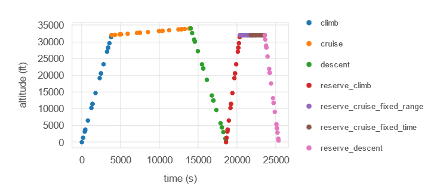
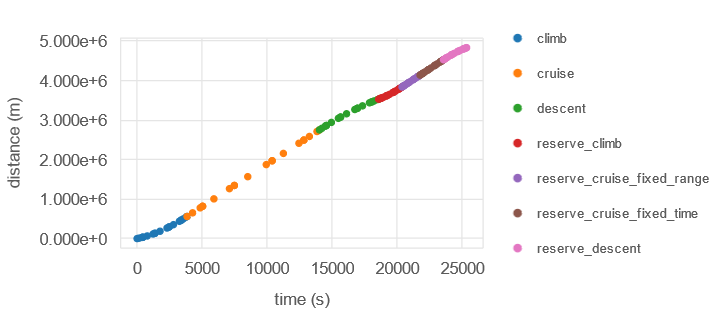

Reserve Mission Example#
The following is an example implementation of a reserve mission as outlined in the Reserve Mission User Guide. The full script that runs this example is avaliable in aviary/examples/reserve_missions
The example is based off of the run_level1_example.py and adds a reserve mission with multiple phases. The reserve mission consists of a climb phase, a fixed-range cruise phase, a fixed-duration cruise phase, and then finally a descent phase.
This multiphase reserve mission example demonstrates how to create an arbitrarily ordered set of phases for a reserve mission, including climb and descent phases. The same phase info used in the Level 1 example is imported, then reserve mission segments are manually defined and added to it. These new phases are specifically treated as reserve mission segments by Aviary because they contain the option "reserve": True.
For the first cruise phase, the range is fixed to 300 km. This is done by adding "target_distance": (300, 'km') to that phase’s options.
The second cruise phase is set to a 30 min duration, essentially a loiter segment. This is done by setting the option "time_duration": (30, 'min').
These two options are mutually exclusive - you can’t fix both distance and duration in your mission, or the problem becomes infeasible and can’t be solved.
Results from this mission can be seen in the figure below.

The reserve mission can be clearly seen following the regular mission. There are two distinct cruise segments visible within the reserve mission, which are our fixed-distance and fixed-duration cruises.
We can also take a look at the plots of distance and mass vs. time to verify that the reserve mission directly connects to the main mission without any discontinuities.


Discontinuous Reserve Missions#
It is possible to define a reserve mission that does not directly connect to the main mission. This may be desired for a variety of reasons, and is easily accomplished. For example, if you removed the climb, fixed-duration cruise, and descent segments from the multiphase reserve mission (leaving only the fixed-range cruise), you can generate a discontinuous mission trajectory that looks like the following: